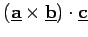
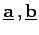
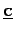
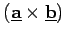

Inhalt Index DeskTop Bronstein

 Lineare Algebra Tensoren Pseudotensoren Einführung des Begriffs Pseudotensor
Lineare Algebra Tensoren Pseudotensoren Einführung des Begriffs Pseudotensor


Das Spatprodukt  aus den polaren Vektoren  und  ist in Übereinstimmung mit dem Verhalten des Skalarproduktes bei Rauminversion ein Pseudoskalar, da der Faktor  ein axialer Vektor ist. Das Vorzeichen des Spatproduktes ändert sich bei Rauminversion.